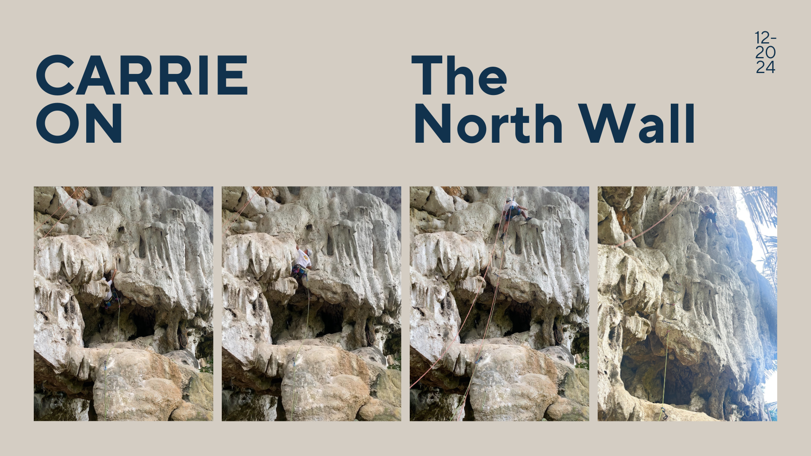
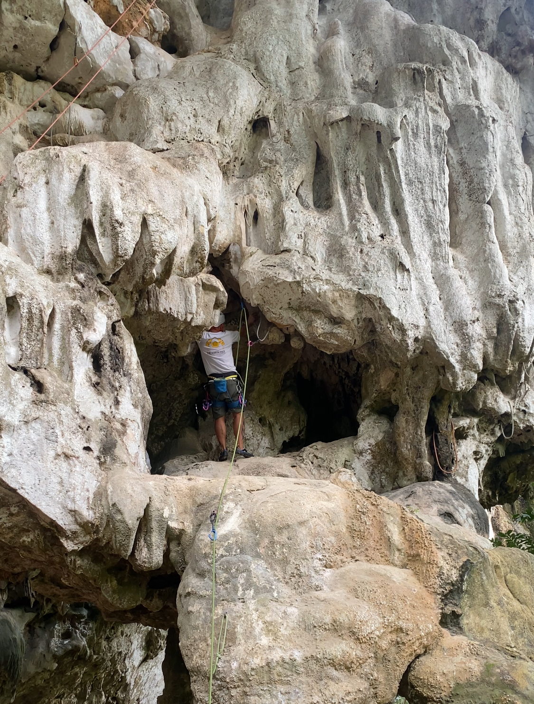
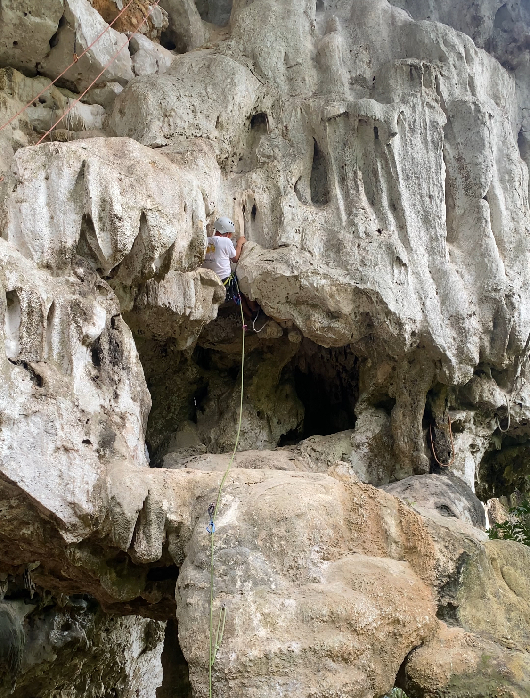

The North Wall, Ao Nang, Krabi, Thailand
Welcome Back to Day 2 at the North Wall
Hey fellow climbers, thank you for stopping by and reading the second blog of my Krabi climbing trip, where I’m celebrating my one-year lead climbing anniversary. For those who might have missed it or are interested in reading my first blog, where I talk about my Day 1 climbing at the North Wall and my climb on the route called “Psycho Killer,” just simple click on this
link to explore.
Before I share my second day experience at the North Wall,
I want to clarify that this site is where I share my personal climbing experiences as an amateur climber. Please make sure to do your own research and prioritize safety. I also using this site to practice and experimenting with coding and programming,
so you’ll probably notice the site evolving here and there
Morning Run by Ao Nang Beach
Day 2 started bright and early. After the intense climb on Psycho Killer the day before, I slept like a rock (pun intended). I woke up around 7 AM, feeling refreshed, and decided to go for a long run along the beach. In case you didn’t know, I’m also a runner—it’s another one of my passions.
Running along Ao Nang Beach that morning was nothing short of surreal. The clear morning sky, the soft glow of the sunrise, and the sound of the waves created a vibe that’s hard to put into words. It was one of those moments that feels perfect, like life is simple and complete. You don’t need anything more complicated than that moment right in front of you.
A Rollercoaster of Emotions
As I ran, I couldn’t help but reflect on how much effort it took to get here. It’s been a long journey of practicing lead climbing, building strength, and learning new skills like coding. All that hard work has brought me to this point—where I can come on a trip like this, climb independently, and share my experiences through a website I’ve built myself.
For me, this trip isn’t just about climbing—it’s about celebrating the time and effort I’ve invested in things I’m passionate about.
Back to the Crag
After the run, I went back to the hotel and start packing for my day-2 at
the North Wall
, honestly I wasn’t sure how many routes that I can climb considering the current grade I climb outdoor, but I am here now, that’s at least I can do, hopefully I won’t have to leave some quickdraws haha
It was around mid-day, me and P Bell are all set, we are ready to climb. We decided to walk to the crag again since we both can’t really drive a motorbike, I was willing to try, but I didn’t want to risk driving with another passenger, which is Bell haha. I actually really enjoy the walk to the crag actually dispite how many dangerous drivers on that road.
Impressions of the North Wall Today
The North Wall was noticeably quieter than the day before, and the vibe felt a little off. After checking out the route maps thoughtfully left by other climbers, we decided to try a 5-grade route called
Carrie On
in the
Jurassic X-mas
area.
Finding the route took some effort, as it was surrounded by much harder climbs. The rock in this section looked stunning—like a white marble waterfall. When I finally spotted Carrie On, I couldn’t believe it was rated a 5. The first two bolts looked ridiculously challenging, and we weren't sure we could even clip them.
A Little Help Goes a Long Way
Luckily, a friendly climber nearby offered to clip the first two bolts for us, confirming that the start was closer to a 6b or 6b+. With the bolts in place, I was ready to climb—but my nerves kicked in, as they always do on the first climb of the day.
Navigating the Route
The initial section was tough, but I made it past the first two bolts. Then came a tight gap that required some maneuvering to clip the next quickdraws. I’m not claustrophobic, but that narrow space definitely made me uncomfortable.
Once I pulled myself out of the gap, I faced the crux—a tricky section where I struggled to find stable footholds. Outdoor falls freak me out way more than gym falls, so my head was spinning with “what if” scenarios. After 15 minutes of trial and error, I finally nailed the move and clipped the rope. The relief was beyond words!
Reaching the Top
With the crux behind me, I felt a surge of confidence. The rest of the climb was smoother, and I focused on controlled, stable movements. Reaching the top was an incredible feeling. It took me about 40 minutes to complete the 20-meter route, but it felt like an entire day’s effort.
After enjoying the view, I cleaned the anchor and came down, happy to have completed the climb. Though I had hoped to try a 6a route, I decided it was best to save it for another trip when I’m more experienced—or with a more seasoned crew.
Meeting Familiar Faces
Back at the hotel, I ran into climbers from Bangkok who we recognized from our gym. I excitedly shared how tough the North Wall was for me, and they invited us to join them at
Railey Beach
the next day. Of course, I said yes—and let me tell you, the next part of this trip is where things get really exciting. Stay tuned for part three!
Until then, thank you for reading!
ByrdieOnTheRocks :)
A Visual Journey on Carrie On

The North Wall Route Map

Finding the Hold

Pulling into the tight gap

Made it to the top!